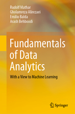

DeepSense competition: Multi Modal Beam Prediction Challenge 2022: Towards Generalization.
Our blog post on Bringing AI research to wireless communication and sensing.
I am giving a talk in Qualcomm webinar on Bringing AI research to wireless communication and sensing.
Our book was published in Springer: Fundamentals of Data Analytics With a View to Machine Learning.
Compressed Sensing in Information Processing (CoSIP) is a priority program (SPP) established by the DFG. First CoSIP colloquium took place in Aachen, Germany, on July 4 and 5, 2016.
We have organized a one-day workshop "Data Science: Theory and Applications" to gather experts from a variety of disciplines to present their work related to this topic. The program and the presentations are available here.